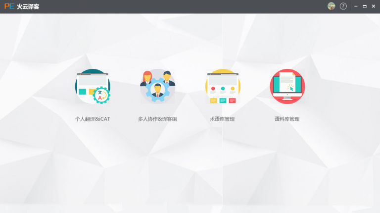
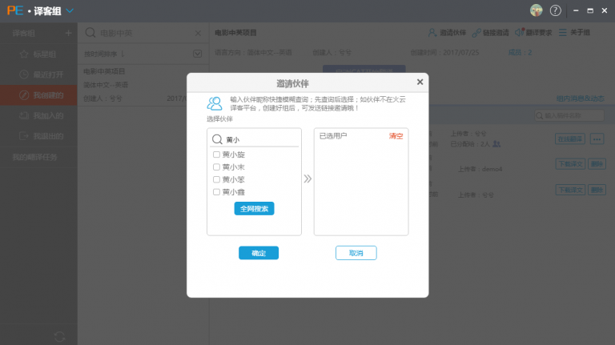
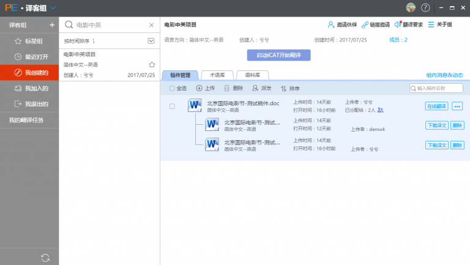
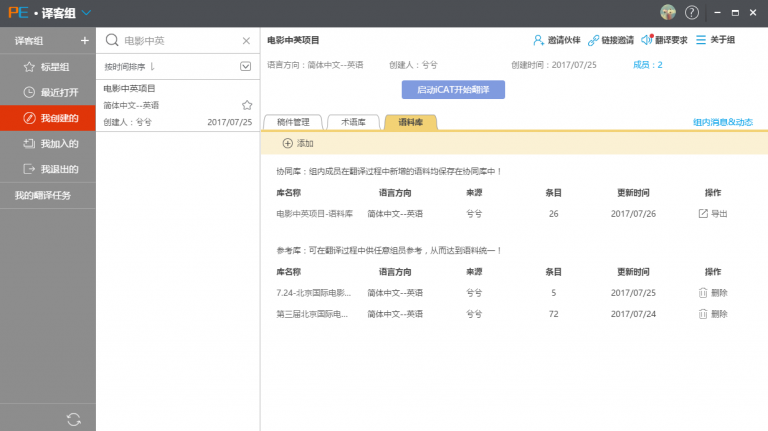
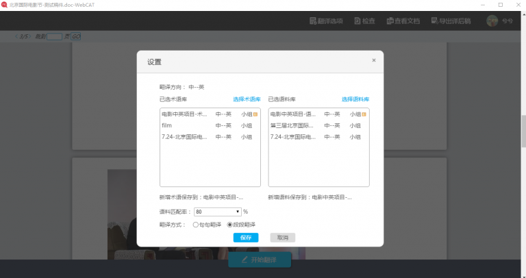
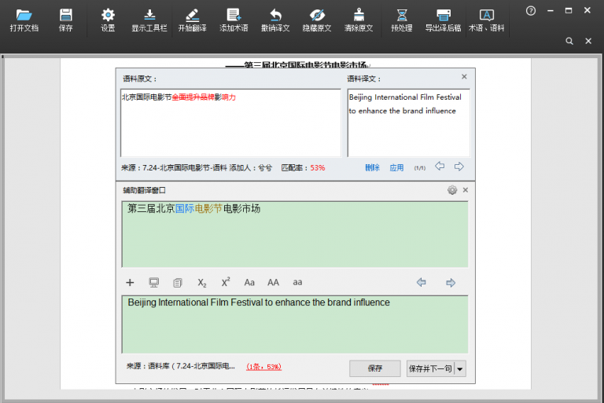
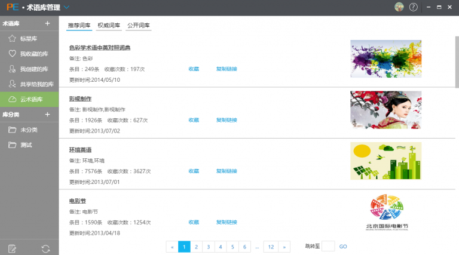

项目经理需要管理翻译团队的成员、稿件以及语言资产。接到翻译任务以后，打开火云译客客户端，进入译客组，开始管理项目。从上传稿件、分配稿件到下载译稿，全流程在线处理，整个过程涉及团队管理、稿件管理和术语语料管理。
新建一个译客组，填写完基础信息（组名称、语言方向、翻译要求）后，就可以邀请团队成员进组了。邀请方式有两种：1、发任务链接；2、通过昵称查找添加。成员进组以后，可以在线交流项目情况，非常方便。
添加完了团队成员，可以上传稿件，添加项目参考库（术语库和语料库），再分配稿件。目前稿件类型只支持word格式。分配稿件有两种方式：1、在线；2、离线。如果是在线分配稿件，项目经理可以点击“在线翻译”查看译员的翻译进度及详情。译员完成任务后会上传译稿，项目经理下载即可。与其它CAT不同的是，项目经理能随时查看稿件的具体翻译内容，了解译员完成速度及质量。
项目完成以后，项目经理可以导出该译客组的术语库和语料库，以供下次项目复用。
译员在接到翻译任务后，可以选择在线翻译（WebCAT）或者离线翻译（iCAT辅助翻译）。 WebCAT和iCAT各有侧重点，前者简单轻量，速度快，不用反复拷贝稿件；后者能处理各种复杂格式的稿件，功能全面且不依赖网络环境。
译员进入译客组后，在“我的翻译任务”中找到并打开稿件，在“翻译选项”菜单中添加术语库和语料库，再进行翻译。协同翻译时可以查看其它译员的翻译结果；添加自己的术语语料资源；随时修改和查看匹配到的术语语料……这些细节虽小，但极大地提升了用户体验。
若不是在译客组中协同翻译，译员只需要在火云译客首页点“个人翻译”就可以启动iCAT翻译。目前支持的稿件类型有Word和Excel。主要翻译步骤有：1、设置语言方向、术语库、语料库、匹配率、机器翻译（谷歌或百度）；2、预处理（填充符合条件的语料）；3、选中句段开始翻译；4、导出译后稿。启动时的操作引导能让新用户快速上手；类似Trados的语料差异匹配提示方便用户修改译文；在翻译框可以方便地实现添加术语、改变译文大小写、上下标等格式；在对语料匹配结果不满意的情况下重新选择显示机器翻译结果；随时调用word工具栏调整文档;译后稿支持多种格式导出……体验了iCAT客户端以后，想到了用这样一句话来描述它“麻雀虽小，五脏俱全”。没有Trados的复杂，却胜在“短小精焊”，更符合本土用户的操作习惯。
对译员来说，术语语料是非常重要的语言资产。译员可以在火云译客客户端点“术语管理”和“语料管理”进入相应的界面进行管理。如果没有现成的术语库资源，可以去火云译客的“云术语库”收藏专业术语后使用。火云译客在对术语和语料的管理权限设计上比其它CAT工具要多，可以新增、删除、修改、分类、共享、审核，也可以在翻译时调用并进行智能提示，大大提高了资源的利用率。
